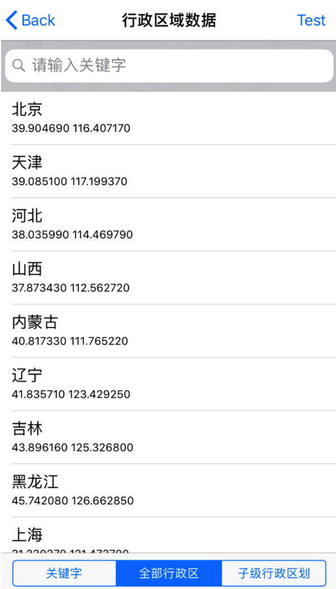

行政区域检索
行政区域检索功能提供中国标准行政区划数据，可用于生成城市列表控件等功能时使用。
引入头文件
#import <QMapKit/QMSSearchKit.h>
在 AppDelegate.m 中设置已勾选WebServiceAPI的Key
#import <QMapKit/QMSSearchKit.h>
- (BOOL)application:(UIApplication *)application didFinishLaunchingWithOptions:(NSDictionary *)launchOptions {
self.window = [[UIWindow alloc] initWithFrame:[[UIScreen mainScreen] bounds]];
// Configure API Key.
[QMapServices sharedServices].APIKey = @"您的APIKey";
// 如需检索功能，请设置检索的API Key
[[QMSSearchServices sharedServices] setApiKey:@"您的APIKey"];
}
注：请用户确认API Key已勾选WebServiceAPI选项，具体设置请参考设置
定义QMSSearcherAPI
定义主搜索对象 QMSSearcherAPI，并继承搜索协议 <QMSSearchDelegate>
构造QMSSearcherAPI
构造主搜索对象 QMSSearcherAPI，并设置代理
self.mySearcher = [[QMSSearcher alloc] initWithDelegate:self];
行政区域检索接口参数
设置关键字行政区域检索参数 QMSDistrictSearchSearchOption，其中 keyword 为必填字段
QMSDistrictSearchSearchOption *distOpt = [[QMSDistrictSearchSearchOption alloc] init];
[distOpt setKeyword:@"北京"];
参数说明：
- NSString *keyword：搜索关键词：
- 支持输入一个文本关键词：keyword=北京
- 支持多个行政区划代码，英文逗号分隔：keyword=130681,419001
设置全部行政区域检索参数 QMSDistrictListSearchOption
QMSDistrictListSearchOption *listOpt = [[QMSDistrictListSearchOption alloc] init];
该参数无必填字段，初始化后即可发起行政区域检索。
设置子级行政区域检索参数 QMSDistrictChildrenSearchOption
QMSDistrictChildrenSearchOption *childOpt = [[QMSDistrictChildrenSearchOption alloc] init];
[childOpt setID:@"110000"];
参数说明：
- NSString *ID：父级行政区划ID，缺省时则返回最顶级行政区划
发起行政区域检索
调用QMSSearcherAPI中的 searchWithDistrictSearchSearchOption: 发起行政区域检索
[self.mySearcher searchWithDistrictSearchSearchOption:distOpt];
调用QMSSearcherAPI中的 searchWithDistrictListSearchOption: 发起全国行政区域检索
[self.mySearcher searchWithDistrictListSearchOption:listOpt];
调用QMSSearcherAPI中的 searchWithDistrictChildrenSearchOption: 发起子级行政区域检索
[self.mySearcher searchWithDistrictChildrenSearchOption:childOpt];
在回调中处理搜索数据
当检索成功后，会调用到 searchWithDistrictSearchOption: didReceiveResult: 回调函数，通过解析QMSDistrictSearchResult 数据把所需的结果绘制到地图上。
- (void)searchWithDistrictSearchOption:(QMSDistrictBaseSearchOption *)districtSearchOption didRecevieResult:(QMSDistrictSearchResult *)districtSearchResult
{
self.distResult = districtSearchResult;
NSLog(@"%@",self.distResult);
}
QMSDistrictSearchResult类属性说明：
| 属性 | 说明 |
|---|---|
| NSArray<NSArray<QMSDistrictData *> *> *result | 结果数组，第0项，代表一级行政区划，第1项代表二级行政区划，以此类推；使用getchildren接口时，仅为指定父级行政区划的子级； 元素类型包含QMSDistrictData元素的数组 |
QMSDistrictData类属性说明：
| 属性 | 说明 |
|---|---|
| NSString *id_ | 行政区划唯一标识；注：省直辖地区，在数据表现上有一个重复的虚拟节点（其id最后两位为99），其目的是为了表明省直辖关系而增加的，开发者可根据实际需要选用 |
| NSString *name | 简称，如“内蒙古” |
| NSString *fullname | 全称，如“内蒙古自治区” |
| CLLocationCoordinate2D location | 中心点坐标(经纬度) |
| NSArray<NSString *> *pinyin | 行政区划拼音，每一下标为一个字的全拼，如：["nei","meng","gu"] |
| NSArray<NSNumber *> *cidx | 子级行政区划在下级数组中的下标位置 |
获取检索结果result里的数据可以参考demo
效果示例图
使用 QMSDistrictSearchSearchOption 参数搜索 “北京”：
QMSDistrictSearchSearchOption *distOpt = [[QMSDistrictSearchSearchOption alloc] init];
[distOpt setKeyword:@"北京"];
[self.mySearcher searchWithDistrictSearchSearchOption:distOpt];
使用 QMSDistrictListSearchOption 参数搜索：
QMSDistrictListSearchOption *listOpt = [[QMSDistrictListSearchOption alloc] init];
[self.mySearcher searchWithDistrictListSearchOption:listOpt];

使用 QMSDistrictChildrenSearchOption 参数搜索"110000"：
QMSDistrictChildrenSearchOption *childOpt = [[QMSDistrictChildrenSearchOption alloc] init];
[childOpt setID:@"110000"];
[self.mySearcher searchWithDistrictChildrenSearchOption:childOpt];
错误信息回调
当检索失败时，回调函数 searchWithSearchOption: didFailWithError: 会返回对应的错误信息
- (void)searchWithSearchOption:(QMSSearchOption *)searchOption didFailWithError:(NSError *)error
{
NSLog(@"%@",error);
}
更详细设置请参考demo